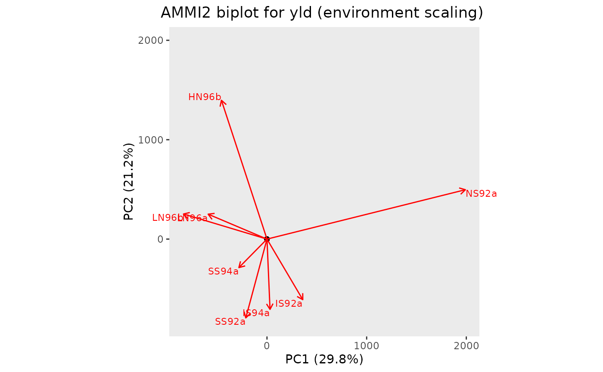

The Additive Main Effects and Multiplicative Interaction (AMMI) model fits
a model which involves the Additive Main effects (i.e. genotype and trial)
along with Multiplicative Interaction effects. The additive effects are the
classical ANOVA main effects for genotype and environment, the
multiplicative effects follow from a principal component analysis on the
interaction residuals (= genotype by environment means after adjustment for
additive genotype and environment effects). This results in an interaction
characterized by Interaction Principal Components (IPCA) enabling
simultaneous plotting of genotypes and trials.
The parameter nPC is used to indicate the number of principal
components that is used in the principal component analysis (PCA). By setting
this parameter to NULL the algorithm determines the best number of
principal components (see Details).
By specifying the parameter byYear = TRUE, a separate analysis will be
done for every year in the data. Combining the option with nPC = NULL
may result in different numbers of principal components per year. The AMMI
estimates will still be returned as a single data.frame, but the other
results will be either lists or arrays.
Usage
gxeAmmi(
TD,
trials = names(TD),
trait,
nPC = 2,
byYear = FALSE,
center = TRUE,
excludeGeno = NULL,
useWt = FALSE
)Arguments
- TD
An object of class
TD.- trials
A character string specifying the trials to be analyzed. If not supplied, all trials are used in the analysis.
- trait
A character string specifying the trait to be analyzed.
- nPC
An integer specifying the number of principal components used as multiplicative term of genotype-by-trial interaction. If
NULL, the number of principal components is determined by the algorithm using forward selection. See details.- byYear
Should the analysis be done by year? If
TRUEthe data is split by the variable year, analysis is performed and the results are merged together and returned.- center
Should the variables be shifted to be zero centered?
- excludeGeno
An optional character vector with names of genotypes to be excluded from the analysis. If
NULL, all genotypes are used.- useWt
Should weighting be used when modeling? Requires a column
wtinTD.
Value
An object of class AMMI, a list containing:
- envScores
A matrix with environmental scores.
- genoScores
A matrix with genotypic scores.
- importance
A data.frame containing the importance of the principal components.
- anova
A data.frame containing anova scores of the AMMI analysis.
- fitted
A data.frame containing fitted values from the AMMI model.
- trait
A character string containing the analyzed trait.
- envMean
A numerical vector containing the environmental means.
- genoMean
A numerical vector containing the genotypic means.
- overallMean
A numerical value containing the overall mean.
If byYear = TRUE, all returned items in the AMMI object except
fitted will consist of a list of results by year.
Details
First a linear model \(trait = genotype + trial + \epsilon\) is fitted with
both genotype and trial fixed components in the model.
The residuals from the fitted model are then used in a PCA. If nPC is
not NULL a single PCA is done using prcomp with
maximum rank nPC.
In case nPC = NULL, the PCA is first done with one PC. Then using
forward selection one by one the number of PCs is increased as long as the
added component is significant in the analysis.
AMMI estimates are then computed using the results of the PCA.
References
Gauch H.G. (1992) Statistical Analysis of Regional Yield Trials: AMMI Analysis of Factorial Designs. Elsevier, Amsterdam.
Yan, W., Kang, M. (2002). GGE Biplot Analysis. Boca Raton: CRC Press.
See also
Other AMMI:
fitted.AMMI(),
plot.AMMI(),
report.AMMI(),
residuals.AMMI()
Examples
## Run AMMI analysis on TDMaize.
geAmmi <- gxeAmmi(TD = TDMaize, trait = "yld")
## Summarize results.
summary(geAmmi)
#> Principal components
#> ====================
#> PC1 PC2
#> Standard deviation 161.12397 136.06980
#> Proportion of Variance 0.29796 0.21250
#> Cumulative Proportion 0.29796 0.51046
#>
#> Anova
#> =====
#> Analysis of Variance Table
#>
#> Response: yld
#> Df Sum Sq Mean Sq F value Pr(>F)
#> Trial 7 127771687 18253098 1466.4731 < 2.2e-16 ***
#> Genotype 210 13821018 65814 5.2876 < 2.2e-16 ***
#> Interactions 1470 18296997 12447
#> PC1 216 5451796 25240 2.9306 < 2.2e-16 ***
#> PC2 214 3888148 18169 2.1096 1.31e-14 ***
#> Residuals 1040 8957053 8613
#> ---
#> Signif. codes: 0 ‘***’ 0.001 ‘**’ 0.01 ‘*’ 0.05 ‘.’ 0.1 ‘ ’ 1
#>
#> Environment scores
#> ==================
#> PC1 PC2
#> HN96b -0.19530892 0.7066260
#> IS92a 0.15345251 -0.3083436
#> IS94a 0.01300981 -0.3578091
#> LN96a -0.25229650 0.1268734
#> LN96b -0.35806958 0.1276750
#> NS92a 0.85058379 0.2513096
#> SS92a -0.09087845 -0.4011956
#> SS94a -0.12049264 -0.1451358
## Create a biplot of genotypes and environment interaction with PC1 and PC2.
plot(geAmmi, plotType = "AMMI2")

## Create a pdf report summarizing the results.
# \donttest{
report(geAmmi, outfile = tempfile(fileext = ".pdf"))
#> Error in report.AMMI(geAmmi, outfile = tempfile(fileext = ".pdf")): An installation of LaTeX is required to create a pdf report.
# }